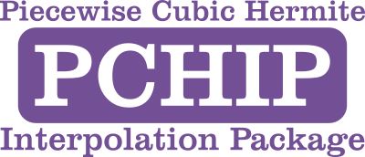

PCHIP

PCHIP, a Fortran package for piecewise cubic Hermite interpolation of data. This is a modern Fortran update of the code in the SLATEC library.
Status


Building pchip
The library can be built with the Fortran Package Manager using the provided fpm.toml file like so:
fpm build --release
To use PCHIP within your FPM project, add the following to your fpm.toml file:
[dependencies]
pchip = { git="https://github.com/jacobwilliams/pchip.git" }
or, to use a specific version:
[dependencies]
pchip = { git="https://github.com/jacobwilliams/pchip.git", tag = "1.0.0" }
Documentation
The latest API documentation can be found here. This was generated from the source code using FORD.
Description
This document describes the contents of PCHIP, which is a Fortran package for piecewise cubic Hermite interpolation of data. It features software to produce a monotone and "visually pleasing" interpolant to monotone data. As is demonstrated in Reference 4, such an interpolant may be more reasonable than a cubic spline if the data contains both "steep" and "flat" sections. Interpolation of cumulative probability distribution functions is another application. (See References 2-4 for examples.)
All piecewise cubic functions in PCHIP are represented in cubic Hermite form; that is, f(x) is determined by its values F(I) and derivatives D(I) at the breakpoints X(I), I=1(1)N. Throughout the package a PCH function is represented by the five variables N, X, F, D, INCFD:
- N - number of data points;
- X - abscissa values for the data points;
- F - ordinates (function values) for the data points;
- D - slopes (derivative values) at the data points;
- INCFD - increment between successive elements in the F- and D-arrays (more on this later).
These appear together and in the same order in all calls.
Routines
The contents of the package are as follows:
-
Determine Derivative Values.
NOTE: These routines provide alternate ways of determining D if these values are not already known.
DPCHIM-- Piecewise Cubic Hermite Interpolation to Monotone data. Used if the data are monotonic or if the user wants to guarantee that the interpolant stays within the limits of the data. (See Reference 3.DPCHIC-- Piecewise Cubic Hermite Interpolation Coefficients. Used if neither of the above conditions holds, or if the user wishes control over boundary derivatives. Will generally reproduce monotonicity on subintervals over which the data are monotonic.DPCHSP-- Piecewise Cubic Hermite Spline. Produces a cubic spline interpolator in cubic Hermite form. Provided primarily for easy comparison of the spline with other piecewise cubic interpolants. (A modified version of de Boor's CUBSPL, Reference 1.)
-
Evaluate, Differentiate, or Integrate Resulting PCH Function.
NOTE: If derivative values are available from some other source, these routines can be used without calling any of the previous routines.
DCHFEV-- Cubic Hermite Function EValuator. Evaluates a single cubic Hermite function at an array of points. Used when the interval is known, as in graphing applications. Called by PCHFE.DPCHFE-- Piecewise Cubic Hermite Function Evaluator. Used when the interval is unknown or the evaluation array spans more than one data interval.DCHFDV-- Cubic Hermite Function and Derivative Evaluator. Evaluates a single cubic Hermite function and its first derivative at an array of points. Used when the interval is known, as in graphing applications. Called by PCHFD.DPCHFD-- Piecewise Cubic Hermite Function and Derivative Evaluator. Used when the interval is unknown or the evaluation array spans more than one data interval.DPCHID-- Piecewise Cubic Hermite Integrator, Data Limits. Computes the definite integral of a piecewise cubic Hermite function when the integration limits are data points.DPCHIA-- Piecewise Cubic Hermite Integrator, Arbitrary Limits. Computes the definite integral of a piecewise cubic Hermite function over an arbitrary finite interval.
-
Utility routines.
DPCHBS-- Piecewise Cubic Hermite to B-Spline converter. Converts a PCH function to B-representation, so that it can be used with other elements of the B-spline package (seeBSPDOC).DPCHCM-- Piecewise Cubic Hermite, Check Monotonicity of. Checks the monotonicity of an arbitrary PCH function. Might be used with PCHSP to build a polyalgorithm for piecewise C-2 interpolation.
Notes
INCFD, the increment between successive elements in the F- and D-arrays is included in the representation of a PCH function in this package to facilitate two-dimensional applications. For "normal" usage INCFD=1, and F and D are one-dimensional arrays. one would call PCHxx (where "xx" is "IM", "IC", or "SP") with
N, X, F, D, 1
Suppose, however, that one has data on a rectangular mesh,
F2D(I,J) = value at (X(I), Y(J)), I=1(1)NX, J=1(1)NY
Assume the following dimensions:
REAL(wp) X(NXMAX), Y(NYMAX)
REAL(wp) F2D(NXMAX,NYMAX), FX(NXMAX,NYMAX), FY(NXMAX,NYMAX)
where 2<=NX<=NXMAX AND 2<=NY<=NYMAX. To interpolate in X along the line Y = Y(J), call PCHxx with
NX, X, F2D(1,J), FX(1,J), 1
To interpolate along the line X = X(I), call PCHxx with
NY, Y, F2D(I,1), FY(I,1), NXMAX
(This example assumes the usual columnwise storage of 2-D arrays in Fortran.)
Keywords
- cubic hermite interpolation, documentation, monotone interpolation, pchip, piecewise cubic interpolation
Original Author
- F. N. Fritsch, Lawrence Livermore National Laboratory
References
- Carl de Boor, "A Practical Guide to Splines", Springer-Verlag, New York, 1978 (esp. Chapter IV, pp.49-62).
- F. N. Fritsch, "Piecewise Cubic Hermite Interpolation Package", Report UCRL-87285, Lawrence Livermore National Laboratory, July 1982. [Poster presented at the SIAM 30th Anniversary Meeting, 19-23 July 1982.]
- F. N. Fritsch and J. Butland, "A method for constructing local monotone piecewise cubic interpolants", SIAM Journal on Scientific and Statistical Computing 5, 2 (June 1984), pp. 300-304.
- F. N. Fritsch and R. E. Carlson, "Monotone piecewise cubic interpolation", SIAM Journal on Numerical Analysis 17, 2 (April 1980), pp. 238-246.
- F. N. Fritsch, "Representations for parametric cubic splines", Computer Aided Geometric Design 6 (1989), pp.79-82.